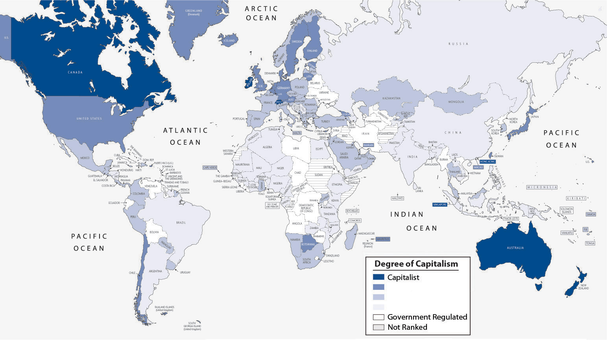

The two major economic systems in modern societies are capitalism and socialism. In practice, no one society is purely capitalist or socialist, so it is helpful to think of capitalism and socialism as lying on opposite ends of a continuum. Societies’ economies mix elements of both capitalism and socialism but do so in varying degrees, so that some societies lean toward the capitalist end of the continuum, while other societies lean toward the socialist end. For example, the United States is a capitalist nation, but the government still regulates many industries to varying degrees. The industries usually would prefer less regulation, while their critics usually prefer more regulation. The degree of such regulation was the point of controversy after the failure of banks and other financial institutions in 2008 and 2009 and after the BP oil spill in 2010. Let’s see how capitalism and socialism differ.
CapitalismAn economic system in which the means of production are privately owned. is an economic system in which the means of production are privately owned. By means of production, we mean everything—land, tools, technology, and so forth—that is needed to produce goods and services. As outlined by famed Scottish philosopher Adam Smith (1723–1790), widely considered the founder of modern economics, the most important goal of capitalism is the pursuit of personal profit (Smith, 1776/1910).Smith, A. (1910). The wealth of nations. London, England: J. M. Dent & Sons; New York, NY: E. P. Dutton. (Original work published 1776) As individuals seek to maximize their own wealth, society as a whole is said to benefit. Goods get produced, services are rendered, people pay for the goods and services they need and desire, and the economy and society as a whole prosper.
As people pursue personal profit under capitalism, they compete with each other for the greatest profits. Businesses try to attract more demand for their products in many ways, including lowering prices, creating better products, and advertising how wonderful their products are. In capitalist theory, such competition helps ensure the best products at the lowest prices, again benefiting society as a whole. Such competition also helps ensure that no single party controls an entire market. According to Smith, the competition that characterizes capitalism should be left to operate on its own, free of government intervention or control. For this reason, capitalism is often referred to as laissez-faire (French for “leave alone”) capitalism, and terms to describe capitalism include the free-enterprise system and the free market.
The hallmarks of capitalism, then, are private ownership of the means of production, the pursuit of profit, competition for profit, and the lack of government intervention in this competition.
The features of socialism are the opposite of those just listed for capitalism and were spelled out most famously by Karl Marx. SocialismAn economic system in which the means of production are collectively owned, usually by the government. is an economic system in which the means of production are collectively owned, usually by the government. Whereas the United States has several airlines that are owned by airline corporations, a socialist society might have one government-owned airline.
The most important goal of socialism is not the pursuit of personal profit but rather work for the collective good: the needs of society are considered more important than the needs of the individual. Because of this view, individuals do not compete with each other for profit; instead they work together for the good of everyone. If under capitalism the government is supposed to let the economy alone, under socialism the government controls the economy.
The ideal outcome of socialism, said Marx, would be a truly classless or communist society. In such a society all members are equal, and stratification does not exist. Obviously Marx’s vision of a communist society was never fulfilled, and nations that called themselves communist departed drastically from his vision of communism.
Recall that societies can be ranked on a continuum ranging from mostly capitalist to mostly socialist. At one end of the continuum, we have societies characterized by a relatively free market, and at the other end we have those characterized by strict government regulation of the economy. Figure 13.1 "Capitalism and Socialism Across the Globe" depicts the nations of the world along this continuum. Capitalist nations are found primarily in North America and Western Europe but also exist in other parts of the world.
Figure 13.1 Capitalism and Socialism Across the Globe
Source: Adapted from The Heritage Foundation. (2010). Distribution of economic freedom. Retrieved from http://www.heritage.org/index/pdf/2010/Index2010_map.pdf.
People have debated the relative merits of capitalism and socialism at least since the time of Marx (Bowles, 2007; Cohen, 2009).Bowles, P. (2007). Capitalism. New York, NY: Pearson/Longman; Cohen, G. A. (2009). Why not socialism? Princeton, NJ: Princeton University Press. Compared to socialism, capitalism seems to have several advantages. It produces greater economic growth and productivity, at least in part because it provides more incentives (i.e., profit) for economic innovation. It also is often characterized by greater political freedom in the form of civil rights and liberties. As an economic system, capitalism seems to lend itself to personal freedom: because its hallmarks include the private ownership of the means of production and the individual pursuit of profit, there is much more emphasis in capitalist societies on the needs and desires of the individual and less emphasis on the need for government intervention in economic and social affairs.
Yet capitalism also has its drawbacks. There is much more economic inequality in capitalism than in socialism. Although capitalism produces economic growth, not all segments of capitalism share this growth equally, and there is a much greater difference between the rich and poor than under socialism. People can become very rich in capitalist nations, but they can also remain quite poor. As we saw in Chapter 9 "Global Stratification", several Western European nations that are more socialist than the United States have fewer extremes of wealth and poverty and take better care of their poor.
Another possible drawback depends on whether you prefer competition or cooperation. As we saw in Chapter 3 "Culture", important values in the United States include competition and individualism, both of which arguably reflect this nation’s capitalist system. Children in the United States are raised with more of an individual orientation than children in socialist societies, who learn that the needs of their society are more important than the needs of the individual. Whereas U.S. children learn to compete with each other for good grades, success in sports, and other goals, children in socialist societies learn to cooperate to achieve tasks.
More generally, capitalism is said by its critics to encourage selfish and even greedy behavior: if individuals try to maximize their profit, they do so at the expense of others. In competition, someone has to lose. A company’s ultimate aim, and one that is generally lauded, is to maximize its profits by driving another company out of the market altogether. If so, that company succeeds even if some other party is hurting. The small Mom-and-Pop grocery stores, drugstores, and hardware stores are almost a thing of the past, as big-box stores open their doors and drive their competition out of business. To its critics, then, capitalism encourages harmful behavior. Yet it is precisely this type of behavior that is taught in business schools.
Some nations combine elements of both capitalism and socialism and are called social democracies, while their combination of capitalism and socialism is called democratic socialismAn economic system in which the government owns several important industries, but much property remains in private hands, and political freedom is widespread.. In these nations, which include Denmark, Sweden, and several other Western European nations, the government owns several important industries, but much property remains in private hands, and political freedom is widespread. The government in these nations has extensive programs to help the poor and other people in need. Although these nations have high tax rates to help finance their social programs, their experience indicates it is very possible to combine the best features of capitalism and socialism while avoiding their faults (see the “Learning From Other Societies” box).
Social Democracy in Scandinavia
The five Scandinavian nations, also called the Nordic nations, are Denmark, Finland, Iceland, Norway, and Sweden. These nations differ in many ways, but they also share many similarities. In particular, they are all social democracies, as their governments own important industries while their citizens enjoy much political freedom. Each nation has the three branches of government with which most people are familiar—executive, judicial, and legislative—and each nation has a national parliament to which people are elected by proportional representation.
Social democracies like the Scandinavian nations are often called controlled capitalist market economies. The word controlled here conveys the idea that their governments either own industries or heavily regulate industries they do not own. According to social scientist Tapio Lappi-Seppälä of Finland, a key feature of these social democracies’ economies is that inequality in wealth and income is not generally tolerated. Employers, employees, and political officials are accustomed to working closely to ensure that poverty and its related problems are addressed as much as possible and in as cooperative a manner as possible.
Underlying this so-called social welfare model is a commitment to universalism. All citizens, regardless of their socioeconomic status or family situation, receive various services, such as child care and universal health care, that are free or heavily subsidized. To support this massive provision of benefits, the Scandinavian nations have very high taxes that their citizens generally accept as normal and necessary.
This model has been praised by political scientist Torben Iversen, who lauds its goal of achieving full employment and equality. This attempt has not been entirely free of difficulties but overall has been very successful, as the Scandinavian nations rank at or near the top in international comparisons of health, education, economic well-being, and other measures of quality of life. The Scandinavian experience of social democracy teaches us that it is very possible to have a political and economic model that combines the best features of capitalism and socialism while retaining the political freedom that citizens expect in a democracy. (Berman, 2006; Iversen, 1998; Lappi-Seppälä, 2007)Berman, S. (2006). The primacy of politics: Social democracy and the making of Europe’s twentieth century. New York, NY: Cambridge University Press; Iversen, T. (1998). The choices for Scandinavian social democracy in comparative perspective. Oxford Review of Economic Policy, 14, 59–75; Lappi-Seppälä, T. (2007). Penal policy in Scandinavia. Crime and Justice, 36, 217–296.